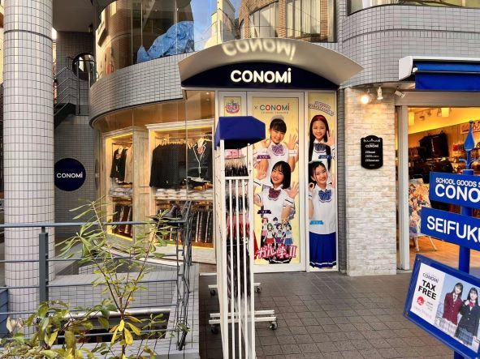
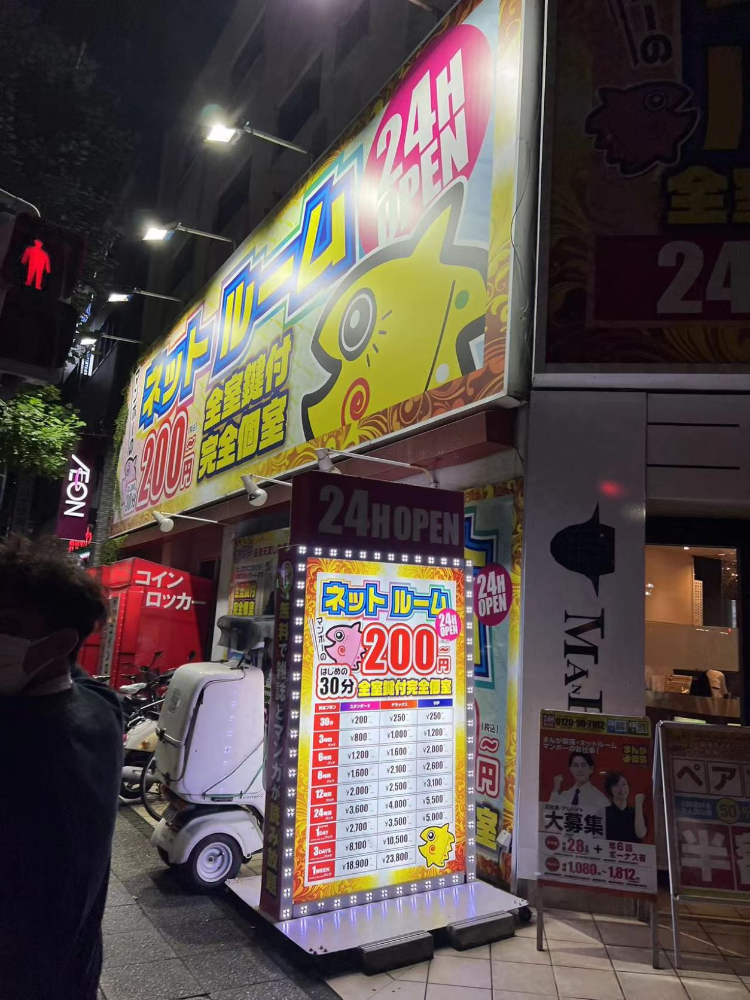

1.慶応マッサージ

この看板は関内の商店街で見ました、なぜマッサージ屋を慶応になつけるのがわからなかった。
オンナーさんは自分は難関大学と同じレベルの手腕があることを示したいですか、またはたったギャグなのか、
このオンナーさんが慶応の卒業生か、まあ、たくさんの疑いが浮かべるから、とても覚えやすい、新鮮な店名です。
この看板の名前を一応忘れて、デザインから見ると、とてもシンプルな青地の白文字で、パッと見る
と、とても見やすく、周囲の鮮やかな看板たちと比べるともっと目立つでしょう。そして、周囲の看板
より大きな文字を使っているから、広告としてとても成功だと思います。
2.このみjkショップ

これは原宿で見たスカートショップです、konomiの名前を付けて、単語を使って店名にするのがとても
良いだと思います。読みやすいし、覚えやすい。看板で可愛い女の子がこの店の商品を着ている姿が載って
いるので、文字よりもっと直感的、もっと人の印象に残っると思います。
人がいっぱいいる場所では、やっぱ写真を示すことが一番直感的だと思います。そして、観光客がいっぱい
いるからtaxfreeができることも直接書いてある、外国人の観光客を惹くこともできる。
3.ネットルーム

関内で見たネットルームの看板です、ネットルームといえば、泊まる場所に多く使われている。ホテルより安いから、
コスパを優先しないといけない。だから、この看板で赤い色で大きく200円のことを書いてある。パッと見ると、安いと
思われるから。
看板の周りにたくさんの電球を付けてある。とても目立つだと思います。そして、夜にはもっと目立つになるから、
夜で電車を逃した人に惹かれるでしょう。
完全個室や鍵付きなどの施設完備さを示したいから、大きく文字で書いてある。けど、3はじめの30分だけは200円
のことは小さく書いてある、この店が結構ずるいではないかと思います。